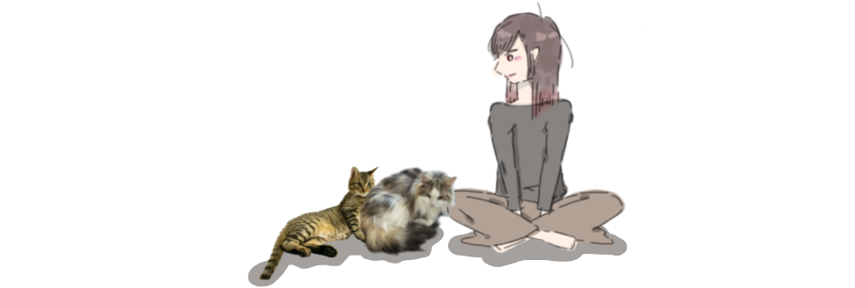
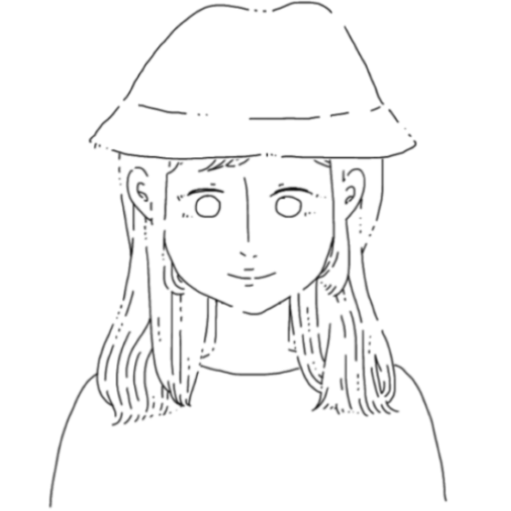
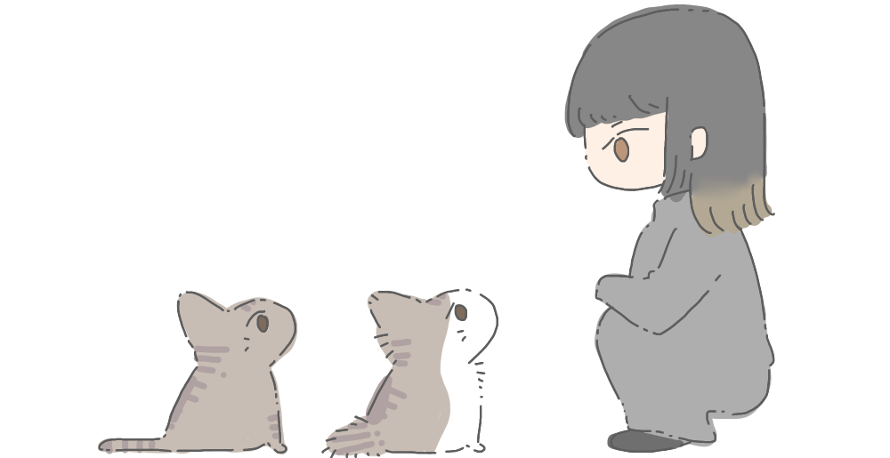

misaki
1991 / 12 / 20 生 滋賀出身・現在大阪在住ねこ / 食べること / 旅行 /
お酒を飲む場(楽しいから) /
イラスト・絵を描く / 写真撮影
音楽鑑賞・ライブ観戦 / 動画鑑賞 /
ファッション / お買い物 /
人と話すこと / 楽しいこと
ねこ / 食べること / 旅行
お酒を飲む場(楽しいから)
イラスト・絵を描く / 写真撮影
音楽鑑賞・ライブ観戦 / 動画鑑賞
ファッション / お買い物
人と話すこと / 楽しいこと
charo ♂
2018 / 07 / 30 生 大阪出身大阪在住
生後一ヶ月に大阪のアメリカ村で拾われ
現在健康的に成長中。
お腹にハートの模様があるのが特徴。
名前の由来 : 元が茶色だから
性格 : 甘えん坊でやんちゃな5歳の男の子
よくドジをする
好き嫌いがなくなんでも食べる
moff ♀
2017 / 07 / 30 生 出身不明大阪在住
友人からの連絡があり、
” 猫を引き取らないか ”ということから
一ヶ月のトライアル期間を経て
2023 / 08 家族の一員になる。
名前の由来：わからないが多分全身毛が
もふもふだから
性格：おっとりしていて怒らない
よく食べるがよく吐く
たまにちゃろを追いかけ回す習性がある
